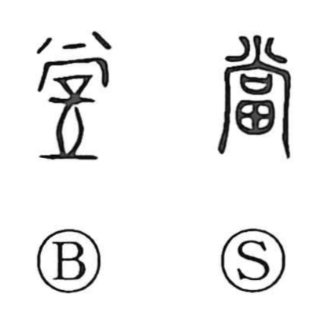

Explanation
当 is the shortened form of 當, with 尚 as its phonetic above 田, cultivated land. 尚 represents a window through which divine presence is welcomed; the spreading strokes above it mark that descent. Together with the field below, the composition probably belongs to an agricultural rite.
當 is closely associated with 嘗, which concerns receiving a visiting deity and, in later use, the offering of newly harvested food. Such ceremonies had to meet the right seasonal conditions. To perform something at the fitting time gives a possible bridge to 當 as ‘appropriate’ or ‘corresponding to the occasion.’
The meanings then apply to place, circumstance, and obligation: facing something, meeting it, matching it, being equivalent, or being what ought to happen. The character also came to be used for pledging property, a function earlier written 典.